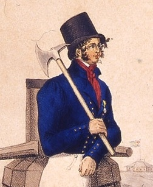

Född 7 dec 1817 i Båtsmanstorp 102 Stupekulla, Ekhult, Rönö (E) 1 .
Död 25 jun 1897 i Ludden, Norrköpings Sankt Johannes (E) 2 .

F Bengt Andersson Trumpen.
Född 30 jul 1769 i Stockerum, Rönö (E) 3 .
Död 24 nov 1850 i Rönö fattigstuga, Rönö (E) 4 .
Född 1725
Född 1727 5 .
Död 4 dec 1772 i Ingelstorp, Rönö (E) 5 .
Född 3 jul 1774 i Tånglöt, Rönö (E) 6 .
Död 24 aug 1835 i Gottenvik fattigstuga, Gottenvik, Rönö (E) 7 .
Född 24 apr 1748 i Rönö (E) 8 .
Född 1750